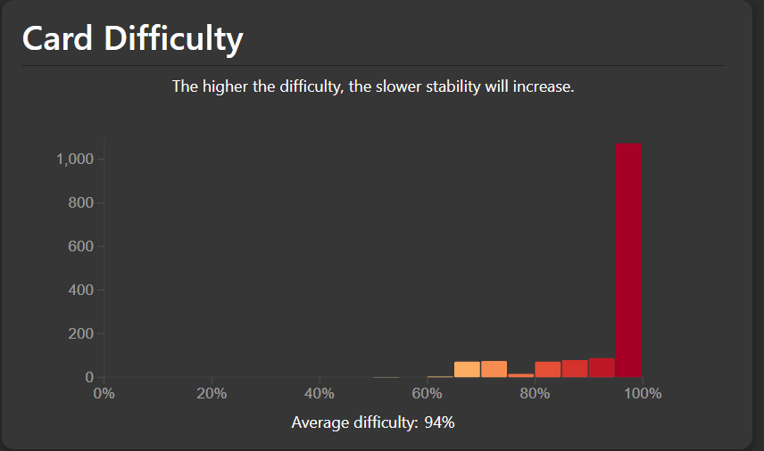

FSRS
The new Free Spaced Repetition Scheduler (FSRS) algorithm introduced in Anki 23.10 also solves the issues with Anki-SM2 and makes it simpler to configure by exposing the Desired Retention setting instead of modifying SM-2 settings such as Graduating interval, Easy bonus, etc.
Additionally, the default FSRS-5 parameters are also better than SM-2 for 99.0% of users according to the benchmarks, which is benchmarked on approximately 10,000 Anki users.
However, some users are reluctant to make the switch because they would still like full control of the SM-2 scheduling algorithm compared to the FSRS algorithm where the desired retention setting is the main configurable parameter, and directly modifying the FSRS parameters is generally not advisible since it has already been optimized to the user's review history.
Furthermore, according to the FSRS Learning and Relearning Steps docs, (re)learning steps should not be greater than or equal to 1 day because
(Re)learning steps of 1 day or greater are not recommended when using FSRS. The main reason they were popular with the legacy SM-2 algorithm is because repeatedly failing a card after it has graduated from the learning phase could reduce its ease a lot, leading to what some people called "ease hell". This is not a problem that FSRS suffers from. By keeping your learning steps under a day, you will allow FSRS to schedule cards at times it has calculated are optimal for your material and memory. Another reason not to use longer learning steps is because FSRS may end up scheduling the first review for a shorter time than your last learning step, leading to the Hard button showing a longer time than Good.
We also recommend you keep the number of learning steps to a minimum. Evidence shows that repeating a card multiple times in a single day does not significantly contribute to long-term memory, so your time is better spent on other cards or a shorter study session.
As a result, some users still wish to have (re)learning steps greater than or equal to 1 day and hence stick with the default Anki SM-2 algorithm.
Ease Hell
FSRS-5 addresses Ease Hell (ie, Difficulty Hell) by applying mean reversion to the new difficulty value after review. This implies that a card's difficulty would converge to the average difficulty over time.
However, it is possible that even with optimized parameters, it may take thousands of reviews before a card converges back to the average difficulty.
In particular, the next difficulty value after review with mean reversion applied is calculated as
\[ D'' = w_7 \cdot D_0(4) + (1 - w_7) \cdot D' \]
The target value of the mean reversion is \(D_0(4)\), which is the initial difficulty when the first rating is Easy, and is calculated as
\[ \begin{align} D_0(G) &= w_4 - e^{w_5 \cdot (G - 1)} + 1 \\ D_0(4) &= w_4 - e^{w_5 \cdot (4 - 1)} + 1 \\ &= w_4 - e^{w_5 \cdot 3} + 1 \end{align} \]
The next difficulty value after review is calculated as
\[ \begin{align} \Delta D(G) &= -w_6 \cdot (G - 3) \\ D' &= D + \Delta D \cdot \frac{10 - D}{9} \end{align} \]
And the default parameters for FSRS-5 is
w = [0.40255, 1.18385, 3.173, 15.69105, 7.1949, 0.5345, 1.4604, 0.0046, 1.54575,
0.1192, 1.01925, 1.9395, 0.11, 0.29605, 2.2698, 0.2315, 2.9898, 0.51655, 0.6621]
Suppose we have an extremely difficult card where \(D = 10\), and we always press the Good button where \(G = 3\). Then for the first review, we have
\[ \begin{align} D'' &= w_7 \cdot D_0(4) + (1 - w_7) \cdot D' \\ &= w_7 \cdot D_0(4) + (1 - w_7) \cdot \left( D + \Delta D \cdot \frac{10 - D}{9} \right) \\ &= w_7 \cdot D_0(4) + (1 - w_7) \cdot \left( D + (-w_6 \cdot (G - 3)) \cdot \frac{10 - D}{9} \right) \\ &= w_7 \cdot D_0(4) + (1 - w_7) \cdot \left( 10 + (-w_6 \cdot (3 - 3)) \cdot \frac{10 - 10}{9} \right) \\ &= w_7 \cdot D_0(4) + (1 - w_7) \cdot (10 + (-w_6 \cdot 0) \cdot 0) \\ &= w_7 \cdot D_0(4) + (1 - w_7) \cdot 10 \\ &= w_7 \cdot (w_4 - e^{w_5 \cdot 3} + 1) + (1 - w_7) \cdot 10 \\ &= w_7 \cdot (7.1949 - e^{0.5345 \cdot 3} + 1) + (1 - w_7) \cdot 10 \\ &= w_7 \cdot 3.224501589 + (1 - w_7) \cdot 10 \\ &= 0.0046 \cdot 3.224501589 + (1 - 0.0046) \cdot 10 \\ &= 0.0046 \cdot 3.224501589 + 0.9954 \cdot 10 \\ &= 0.014832707 + 9.954 \\ &= 9.968832707 \\ \end{align} \]
We can calculate this automatically by using some code.
Calculate the number of times to go from a difficulty of 10 to 9 by only pressing the Good button
pip install --quiet fsrs==4.1.1
import fsrs
parameters = [0.40255, 1.18385, 3.173, 15.69105, 7.1949, 0.5345, 1.4604, 0.0046,
1.54575, 0.1192, 1.01925, 1.9395, 0.11, 0.29605, 2.2698, 0.2315,
2.9898, 0.51655, 0.6621]
desired_retention = 0.90
scheduler = fsrs.Scheduler(
parameters = parameters,
desired_retention = desired_retention,
maximum_interval = 36500,
)
n = 0
difficulty = 10.0
target_difficulty = 9
print(f"target difficulty: {target_difficulty}")
while difficulty >= target_difficulty:
difficulty = scheduler._next_difficulty(difficulty, fsrs.Rating.Good)
n += 1
print(f"{n}: {difficulty}")
target difficulty: 9
1: 9.968832707311106
2: 9.937808784168583
3: 9.906927571072515
4: 9.876188411556688
5: 9.845590652174634
...
34: 9.016932809163938
35: 8.990287625552892
We see that it takes 35 reviews pressing the Good button in a row before it reaches a difficulty of 9.
Furthermore, we can calculate how many reviews it will take to go from a difficulty of 10 to the initial difficulty when the first rating is Easy (the target difficulty that every card will converge to in FSRS-5).
Calculate the number of times to go from a difficulty of 10 to the initial difficulty when the first rating is Easy by only pressing the Good button
pip install --quiet fsrs==4.1.1
import fsrs
parameters = [0.40255, 1.18385, 3.173, 15.69105, 7.1949, 0.5345, 1.4604, 0.0046,
1.54575, 0.1192, 1.01925, 1.9395, 0.11, 0.29605, 2.2698, 0.2315,
2.9898, 0.51655, 0.6621]
desired_retention = 0.90
scheduler = fsrs.Scheduler(
parameters = parameters,
desired_retention = desired_retention,
maximum_interval = 36500,
)
n = 0
difficulty = 10.0
target_difficulty = scheduler._initial_difficulty(fsrs.Rating.Easy)
print(f"target difficulty: {target_difficulty}")
while difficulty >= target_difficulty:
difficulty = scheduler._next_difficulty(difficulty, fsrs.Rating.Good)
n += 1
print(f"{n}: {difficulty}")
target difficulty: 3.2245015893713678
1: 9.968832707311106
2: 9.937808784168583
3: 9.906927571072515
4: 9.876188411556688
5: 9.845590652174634
...
6971: 3.2245015893713678
6972: 3.2245015893713673
We see that it takes almost 7000 reviews before it reaches the target difficulty.
In other words, the smaller the value \(w_7\) is, the longer it will take for a card to exit Difficulty Hell.
The effects of having a difficult card can be calculated with the code below.
Calculate the next interval for a card with a difficulty of 10.0
pip install --quiet fsrs==4.1.1
import fsrs
parameters = [0.40255, 1.18385, 3.173, 15.69105, 7.1949, 0.5345, 1.4604, 0.0046,
1.54575, 0.1192, 1.01925, 1.9395, 0.11, 0.29605, 2.2698, 0.2315,
2.9898, 0.51655, 0.6621]
desired_retention = 0.90
difficulty = 10.0
stability = 100.0
retrievability = 0.90
scheduler = fsrs.Scheduler(
parameters = parameters,
desired_retention = desired_retention,
maximum_interval = 36500,
)
next_stability = scheduler._next_stability(difficulty, stability, retrievability, fsrs.Rating.Good)
next_interval = scheduler._next_interval(next_stability)
print(f"Next recall stability: {next_stability}")
print(f"Next interval: {next_interval}")
Next recall stability: 129.07449108737947
Next interval: 129
For a card with a difficulty of 10.0, stability (interval) of 100 days, retrievability of 90%, and desired retention of 90% using the default FSRS-5 parameters, the next interval is 129 days.
Calculate the next interval for a card with a difficulty of 5.0
pip install --quiet fsrs==4.1.1
import fsrs
parameters = [0.40255, 1.18385, 3.173, 15.69105, 7.1949, 0.5345, 1.4604, 0.0046,
1.54575, 0.1192, 1.01925, 1.9395, 0.11, 0.29605, 2.2698, 0.2315,
2.9898, 0.51655, 0.6621]
desired_retention = 0.90
difficulty = 10.0
stability = 100.0
retrievability = 0.90
scheduler = fsrs.Scheduler(
parameters = parameters,
desired_retention = desired_retention,
maximum_interval = 36500,
)
next_stability = scheduler._next_stability(difficulty, stability, retrievability, fsrs.Rating.Good)
next_interval = scheduler._next_interval(next_stability)
print(f"Next recall stability: {next_stability}")
print(f"Next interval: {next_interval}")
Next recall stability: 274.44694652427677
Next interval: 274
In contrast, for a card with a difficulty of 5.0, stability (interval) of 100 days, retrievability of 90%, and desired retention of 90% using the default FSRS-5 parameters, the next interval is 274 days.
In this case, the card with a difficulty of 10.0 has its interval reduced by 2.1x compared to the card with a difficulty of 5.0. This is an issue because if a card was previously difficult, but became easier via increased repetitions and better memory encoding of the material, then the user will be doing more reviews than necessary, resulting in an increased workload.
Additionally, with the default FSRS-5 parameters, a card with a difficulty of 5.0 only takes pressing the Again button 5 times before it reaches a difficulty of 9.23.
Calculate the number of times to go from a difficulty of 5 to 9
pip install --quiet fsrs==4.1.1
import fsrs
parameters = [0.40255, 1.18385, 3.173, 15.69105, 7.1949, 0.5345, 1.4604, 0.0046,
1.54575, 0.1192, 1.01925, 1.9395, 0.11, 0.29605, 2.2698, 0.2315,
2.9898, 0.51655, 0.6621]
desired_retention = 0.90
scheduler = fsrs.Scheduler(
parameters = parameters,
desired_retention = desired_retention,
maximum_interval = 36500,
)
n = 0
difficulty = 5
target_difficulty = 9
print(f"target difficulty: {target_difficulty}")
while difficulty <= target_difficulty:
difficulty = scheduler._next_difficulty(difficulty, fsrs.Rating.Again)
n += 1
print(f"{n}: {difficulty}")
target difficulty: 9
1: 6.607035107311108
2: 7.687540460685953
3: 8.414028521438494
4: 8.902489685251803
5: 9.230911198891961
This scenario is not limited to pressing the Again button 5 times in a row. It is possible to enter Difficulty Hell with the Again -> Good -> Again -> Good loop. If \(w_7\) is close to 0, it will take many reviews pressing the Good button before the card exits Difficulty Hell.
Whether the mean reversion in FSRS or the Straight Rewards addon for SM-2 is actually effective is still under research, but given that FSRS-5 is optimized on the review history of 20,000 users and found that \(w_7\) to be near \(0\) seems to indicate that it is not as effective as one may hope. However, with Straight Rewards, it is possible for a card to exit Ease Hell (Difficulty Hell) much quicker with user defined values.
Additionally, for some users, after optimizing their deck with optimal parameters, \( w_7 \) may be 0 or close to 0, making the mean reversion algorithm virtually nonexistent. Also, manually modifying this value for most users is generally not recommended, since the parameters have been specifically chosen for optimal results. Moreover, it goes against the design and simplicity of the FSRS algorithm. Ideally, the only parameter the user should configure is the Desired Retention setting.
Using the Easy button more often can fix this issue, but deciding whether to press the Easy button to decrease the difficulty or not introduces extra mental fatigue while reviewing. Additionally, the difficulty of a card is not shown during reviews. Moreover, some users only use the Again and Good buttons (ie, Pass/Fail) to reduce mental fatigue. In this case, the difficulty of a card will require many reviews pressing the Good button before it exits Difficulty Hell if \(w_7\) is close to 0.
You can determine if your deck is stuck in Difficulty Hell by navigating to the Statistics screen, scrolling down to the Card Difficulty graph, and seeing if your \(w_7\) parameter is close to 0. The image below is an example of a deck stuck in Difficulty Hell where most of the cards are stuck at 100% difficulty, and the user's \(w_7\) parameter is \(0.0010\) which means a card will take a long time to exit difficulty hell.

Short intervals for new cards
FSRS-5 addresses the short intervals for new cards issue by optimizing on a user's collection and determining the best initial stability (interval when retrievability is 90%) for each rating (Again, Hard, Good, and Easy). That is, the initial stability after the first rating is calculated as
\[ S_0(G) = w_{G - 1} \]
where \(G = 1\) is pressing the Again button, \(G = 2\) is pressing the Hard button, \(G = 3\) is pressing the Good button, and \(G = 4\) is pressing the Easy button.
With the default parameters,
w = [0.40255, 1.18385, 3.173, 15.69105, 7.1949, 0.5345, 1.4604, 0.0046, 1.54575,
0.1192, 1.01925, 1.9395, 0.11, 0.29605, 2.2698, 0.2315, 2.9898, 0.51655, 0.6621]
we have
\[ \begin{align} S_0(1) &= 0.40255 \\ S_0(2) &= 1.18385 \\ S_0(3) &= 3.173 \\ S_0(4) &= 15.69105 \\ \end{align} \]
This implies that the first rating that is chosen for the first learning step will determine the card's interval when it graduates to a review card.
For example, for a deck with learning steps 1m 10m and the first rating is
Good on the first learning step of 1m, then when the card has graduated, it
will have an interval of 3 days (rounded down from 3.173).
There is no direct equivalent in Anki SM-2 for this behaviour, but the closest is the Graduating interval and Easy interval.
Long intervals for mature cards
FSRS-5 addresses the long intervals for mature cards issue with the following formula
\[ S^\prime_r(D,S,R,G) = S \cdot (e^{w_8} \cdot (11-D) \cdot S^{-w_9} \cdot (e^{w_{10}\cdot(1-R)}-1) \cdot w_{15}(\textrm{if G = 2}) \cdot w_{16}(\textrm{if G = 4}) + 1) \]
According to the FSRS algorithm wiki,
Let \(SInc\) (the increase in stability) denotes \(\frac{S^{'}_{r}(D, S, R, G)}{S}\) which is equivalent to Anki's ease factor.
- The larger the value of D , the smaller the \(SInc\) value. This means that the increase in memory stability for difficult material is smaller than for easy material.
- The larger the value of S , the smaller the \(SInc\) value. This means that the higher the stability of the memory, the harder it becomes to make the memory even more stable.
- The smaller the value of R, the larger the \(SInc\) value. This means that the spacing effect accumulates over time.
- The value of \(SInc\) is always greater than or equal to 1 if the review was successful.
Furthermore, the formula above is a more sophisticated algorithm than SM-2 for handling cards that are past its due date or reviewed early. In particular, the retrievability of a card is calculated as
\[ R(t, S) = \left( 1 + FACTOR \cdot \frac{t}{S} \right)^{DECAY} \]
where \(t\) is the number of days since the last review, \(S\) is the stability (interval when probability of recall is 90%), \(DECAY = -0.5\), and \(FACTOR = \frac{19}{81}\).
In other words, FSRS can accurately predict the retrievability of a card when it is reviewed, whether it is early or late. In contrast, Anki SM-2 does not predict the retrievability of a card. When a card is reviewed past its due date, the formula becomes
\[ \text{NewInterval} = \left(\text{OldInterval} + \frac{DaysLate}{2}\right) \times \text{EaseFactor} \times \text{IntervalModifier} \]
The formula for reviewing a card early in Anki SM-2 is also similar and is omitted.
Post-lapse stability
When a card is forgotten and relearned, FSRS will retain a portion of the current interval. The formula is calculated by
\[ S'_{f}(D,S,R) = w_{11} \cdot D^{-w_{12}} \cdot ((S+1)^{w_{13}} - 1) \cdot e^{w_{14} \cdot (1 - R)} \]
For example, if a card has an interval of \(S = 1000\) days with \( D = 5 \) and \( R = 0.9 \) and default FSRS-5 parameters \(w = [ \cdots, 1.9395, 0.11, 0.29605, 2.2698 \cdots ]\), then
\[ \begin{align} S'_{f}(5,1000,0.9) &= 1.9395 \cdot 5^{-0.11} \cdot ((1000+1)^{0.29605} - 1) \cdot e^{2.2698 \cdot (1 - 0.9)} \\ &\approx 13.72 \end{align} \]
Forgetting and relearning a card will preserve part of the card's interval. While preserving a card's interval might make sense since the material has not been completely forgotten, SuperMemo has found that it is harmful, since it slows down the identification of leeches. They state
Post-lapse stability (PLS) is the stability after a review with a failing grade. Unlike stability computed after a successful repetition, post-lapse stability cannot be derived from the SInc matrix.
In the ideal case, for simple memories, forgetting results in a reset of estimated stability back to near-zero. In theory, only difficult items made of composite memories may show a substantial decrease in the costs of re-learning, however, even that does not show in data.
It has been shown long ago that the length of the first post-lapse optimum interval is best correlated with the number of memory lapses recorded for the item. Even then, post-lapse interval usually oscillates in the range of 1-4 days for the default forgetting index of 10%. The correlation between lapses and the PLS is not very useful in adding to the efficiency of learning. Some competitive spaced repetition software, as well as SuperMemo in its first years, experimented with re-learning hypotheses based on ancient wisdoms of psychology, e.g. by halving intervals after a memory lapse. Current data shows clearly that this approach is harmful, as it slows down the identification of leeches. Such an approach to handling forgotten items is a form of irrational procrastination.
In Anki, the New Interval setting is similar and can be used to preserve part of the card's interval, but they also recommend to leave it at 0.00 for the same reasons above.
For some users, preserving the card's interval may not be desirable but is likely to not know that this behaviour exists without looking into understanding how the algorithm works. While one can set \( w_{11} = 0 \) to turn this behaviour off, this is generally not recommended for the same reasons above in the Ease Hell section
The SuperMemo and FSRS benchmark data currently conflict as to which is the best approach here, and more research is most likely required before a conclusion can be drawn.
Potential issues with optimizing
While the optimizer can optimize your parameters in order to reach the desired retention and make the scheduling more efficient and reduce a user's workload, it can be a double edged sword. Instead of fixing the root cause of the issue, it may encourage users to continue their bad habits and increase their workload, losing any efficiency that would have been gained by switching from Anki SM-2 to FSRS.
Poor encoding and card formulation
If the encoding of the information to be learned and reviewed is poor, then it will be difficult to recall the information. SuperMemo's 20 rules of formulating knowledge goes into detail on how to address this and is highly recommended to be read in order to use Anki effectively. Some important points are
- Do not learn if you do not understand
- Learn before you memorize
- Stick to the minimum information principle
- Use imagery
- Use mnemonic techniques
- Graphic deletion is as good as cloze deletion
- Combat interference
- Optimize wording
- Personalize and provide examples
- Rely on emotional states
- Redundancy does not contradict minimum information principle
Some points have been omitted for brevity but are as equally important.
As a result of poor encoding and card formulation, a card will be extremely difficult to recall which will consequently lower the retention rate of a user's deck. If the retention rate is low (for example, below 80%) and the user has a desired retention of 90%, then the optimized parameters and algorithm will suggest shorter intervals in order to reach a retention of 90%, without the user fixing the actual issue that caused the low retention rate in the first place. In this case, the user's workload has increased due to the suggested shorter intervals after optimizing their parameters.
Accidentally making review cards more difficult
During review, a user may test themselves and unintentionally make the card harder than it should.
For example, when reviewing a monolingual Japanese vocabulary card where the front contains the word to be recalled in kanji, and its reading and Japanese definition on the back, the user may test themselves by checking if they can regurgitate the Japanese definition word for word. This is an extremely difficult task and makes the card harder to review than it should.
In this scenario, to make it easier to review, the user can test themselves by recalling an image if the word is a concrete noun. The benefit of this is that less time is spent on the card during review and makes it easier to recall. For words that are not concrete nouns, recalling the gist of the definition and being lenient with the grading process makes the card less difficult to review. Furthermore, converting the vocabulary card into a sentence card can also help make the card less difficult to review.
This is mainly an extension of the minimum information principle but deserves special mention. For the same reasons above, if the root cause of the issue is not fixed, the algorithm will simply optimize and suggest shorter intervals and increase the workload in order to reach the desired retention, encouraging the user to continue making the card difficult to review.
Using the hard button incorrectly
According to the Anki FSRS docs,
FSRS can adapt to almost any habit, except for one: pressing "Hard" instead of "Again" when you forget the information. When you press "Hard", FSRS assumes you have recalled the information correctly (though with hesitation and a lot of mental effort). If you press "Hard" when you have failed to recall the information, all intervals will be unreasonably high. So, if you have this habit, please change it and use "Again" when you forget the information.
In other words, only the Again button is treated as a fail, and the Hard, Good, and Easy buttons are treated as a Pass. This means that if the user never presses Again, their retention rate will be very high (near 99%) and the optimizer will suggest parameters that gives extremely high intervals upon review in order to reach the user's configured desired retention.
In this case, the suggested intervals are extremely high which make recalling the information difficult. This leads to failing the card often and inevitably increase the workload.